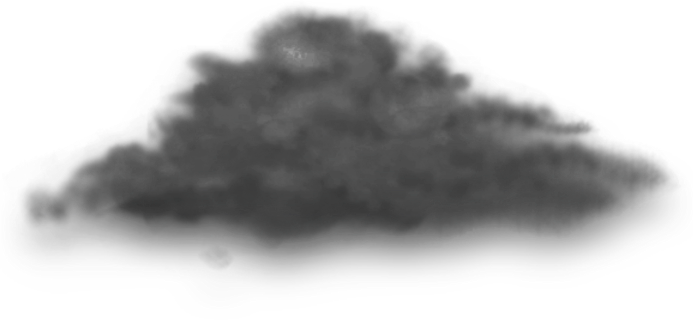
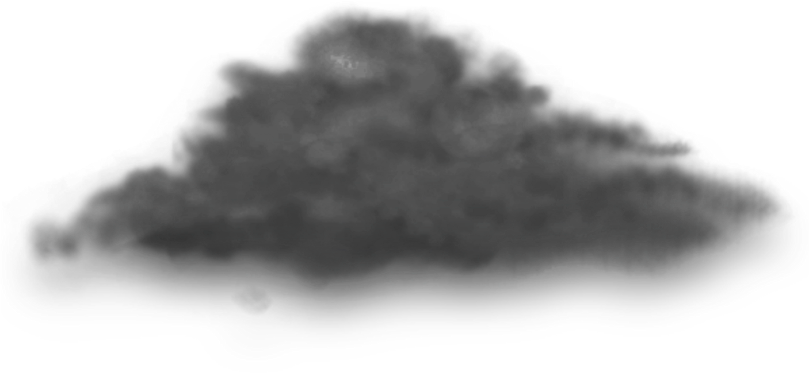
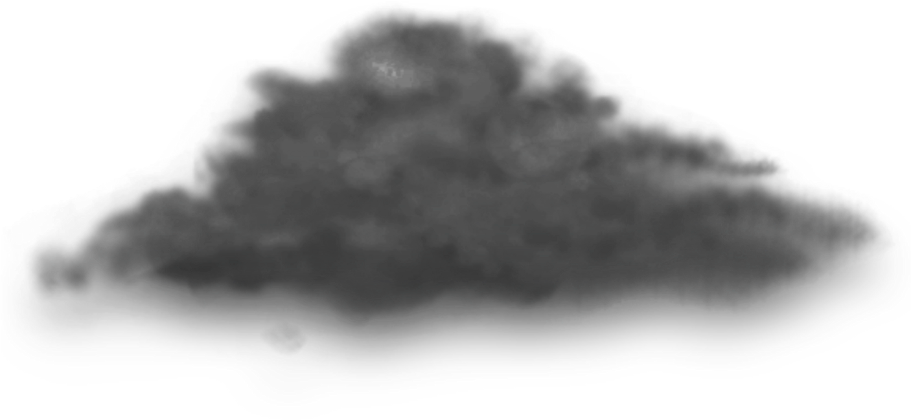
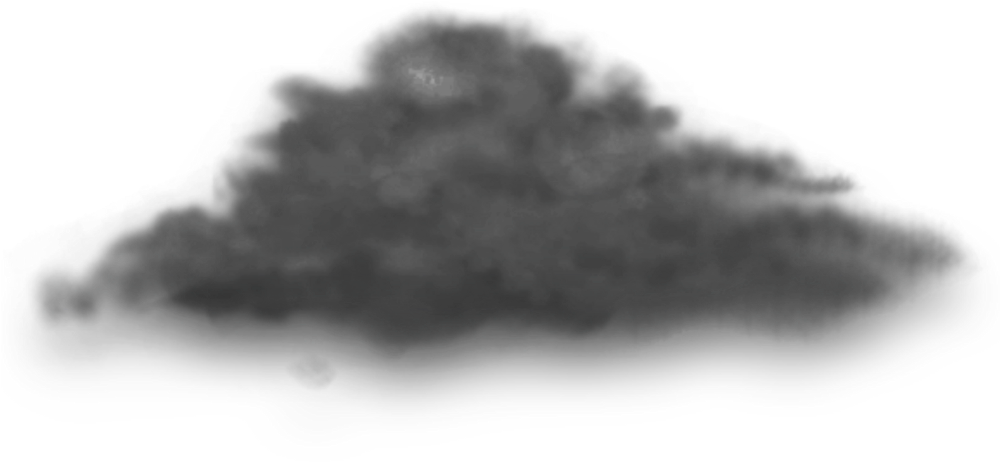

Hello World !
Explore Orion 

The Babylonian star catalogues of the Late Bronze Age name Orion MULSIPA.ZI.AN.NA,[note 1] "The Heavenly Shepherd" or "True Shepherd of Anu" – Anu being the chief god of the heavenly realms.[6] The Babylonian constellation is sacred to Papshukal and Ninshubur, both minor gods fulfilling the role of 'messenger to the gods'. Papshukal is closely associated with the figure of a walking bird on Babylonian boundary stones, and on the star map the figure of the Rooster is located below and behind the figure of the True Shepherd—both constellations represent the herald of the gods, in his bird and human forms respectively.[7] In ancient Egypt, the stars of Orion were regarded as a god, called Sah. Because Orion rises before Sirius, the star whose heliacal rising was the basis for the Solar Egyptian calendar, Sah was closely linked with Sopdet, the goddess who personified Sirius. The god Sopdu is said to be the son of Sah and Sopdet. Sah is syncretized with Osiris, while Sopdet is syncretized with Osiris' mythological wife, Isis. In the Pyramid Texts, from the 24th and 23rd centuries BC, Sah is one of many gods whose form the dead pharaoh is said to take in the afterlife.[8] The Armenians identified their legendary patriarch and founder Hayk with Orion. Hayk is also the name of the Orion constellation in the Armenian translation of the Bible.[9] The Bible mentions Orion three times, naming it "Kesil" (כסיל, literally – fool). Though, this name perhaps is etymologically connected with "Kislev", the name for the ninth month of the Hebrew calendar (i.e. November–December), which, in turn, may derive from the Hebrew root K-S-L as in the words "kesel, kisla" (כֵּסֶל, כִּסְלָה, hope, positiveness), i.e. hope for winter rains.: Job 9:9 ("He is the maker of the Bear and Orion"), Job 38:31 ("Can you loosen Orion's belt?"), and Amos 5:8 ("He who made the Pleiades and Orion"). In ancient Aram, the constellation was known as Nephîlā′, the Nephilim are said to be Orion's descendants.